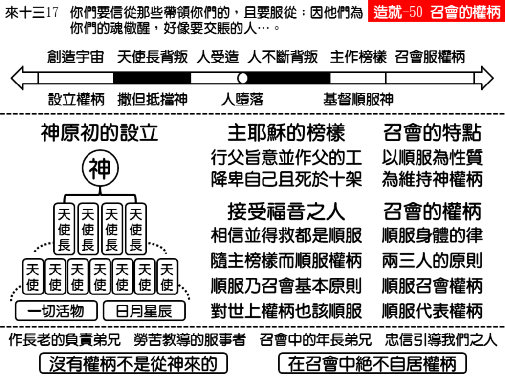

诗歌：604首、606首
重要经文：
希伯来书十三章17节上：你们要信从那些带领你们的，且要服从。
彼得前书五章5节上：照样，年幼的要服从年长的。
帖撒罗尼迦前书五章12~13节：弟兄们，我们还请求你们，要敬重那些在你们中间劳苦，并在主里带领你们，劝戒你们的人，又因他们所作的工，在爱里格外尊重他们；你们也要彼此和睦。
纲目要点：
壹 神设立权柄作管理宇宙的原则。
贰 宇宙中背叛的历史。
参 主耶稣建立顺服的榜样：
一 主耶稣是完全顺服的人。
二 福音乃是一个命令叫人顺服。
三 召会的基本原则是顺服。
四 对于世界上的权柄也要顺服。
肆 顺服权柄乃是召会的特点：
一 要在召会里学习作顺服的人。
二 顺服乃是召会的生命和性质。
伍 召会中的权柄：
一 顺服身体的律。
二 两三个人的原则。
三 学习顺服召会的权柄。
四 顺服召会里的代表权柄。
信息选读：
神设立权柄作管理宇宙的原则
当神创造这一个宇宙的时候，神已经设立权柄作祂管理这一个宇宙的原则。祂自己是最高的权柄，同时也是一切权柄的来源。在祂下面有好些位的天使长，再下去有许多的天使。按耶利米和以赛亚的记载，那一个时候，在地上还有另外一种的活物。这是当初神管理这一个宇宙的安排。不只活的人是如此，就是整个宇宙所有的星宿，连这块地和一切的生物，神都用权柄托住它们。神都用权柄的命令，替它们设立律法，叫每一个天然的生物，每一种天然的物质，都有一定的律可以遵守。所以权柄在宇宙里是非常要紧的东西。如果有一种的物质，有一种的生物，不按着神所定规的律而行，宇宙就乱了。
宇宙中背叛的历史
前一个世界堕落了，怎样堕落的呢？乃是因为撒但，就是神所设立的天使长，要高抬自己。他心里说，『我要升到天上；我要高举我的宝座…我要与至上者同等。』（赛十四13～14。）撒但的背叛不是背叛别的，乃是背叛权柄。他要与神同等，他要高抬自己作神；他认为在神之下作一切的主还不够。他背叛了神的权柄，他要得着神所有的权柄。结果，你看见说，明亮之星变作撒但，光明的天使变作魔鬼。这一个乃是在人创造之前的事。
神拣选亚伯拉罕作顺服的人
神拣选亚伯拉罕，不只作信心的祖宗，也是作顺服的代表。在列国背叛的时候，在巴别塔混乱的时候，神就拣选亚伯拉罕，不只为着相信，也是为着顺服。神要求、神盼望、神羡慕有顺服的人。神羡慕在背叛的日子中，有人站在顺服的地位上。
不只亚伯拉罕自己是顺服的人，连他的妻子也是顺服的人。不只亚伯拉罕和撒拉顺服神，并且撒拉也顺服亚伯拉罕。撒拉不只在神面前顺服，不只接受直接权柄，撒拉也接受了代表的权柄－亚伯拉罕。他们两个人在夫妻中，在人和人之中，也是顺服的。他们维持了在地上神权柄的原则，神的子民，是根据于神的权柄而拣选的。
主耶稣建立顺服的榜样
一直到拿撒勒人耶稣降生在地上的时候，才有一个神所挑选的人。祂在那里告诉我们说，我怎么听见，就怎么说。我凭着自己不能作什么，惟有看见父所作的事我才作。（约五19。）我不求自己的意思，只求那差我来者的意思。（30。）你在那里看见，有一个人不敢凭自己说，也不敢凭自己作；有一个人是完全服在神的权柄之下。主耶稣自己是神，与神同等，并不是僭越的，可是祂完全服在神的权柄之下。（腓二5～11。）祂死在十字架上之后，神叫祂从死里复活，把祂升为至高，叫祂作主，作基督；又赐给祂那超乎万名之上的名，叫一切在天上的，地上的，和地底下的，因耶稣的名，无不屈膝敬拜祂，无不口称祂为主，赞美祂。主升天之后，就设立祂的召会。
召会的基本原则是顺服
今天到了主耶稣的身体建立在地上的时候，就是我们今天所领会的召会；而召会的基本原则，就是顺服的原则。所以，神本来在世界里所定规的事，今天神在召会里就严格的要求。以弗所和歌罗西都是最高的书信，最高的书信给我们看见说，我们从前是悖逆之子，我们从前生活的原则根本是与世人一样的，是背叛的，所以称作悖逆之子。今天神给我们一个命令：妻子要顺服丈夫，儿女要顺服父母，仆人要顺服主人。这与整个世界不一样。这给我们看见，顺服乃是今天召会的基本原则。
在身体里有一个律
召会乃是基督的身体，身体里有它一定的律。每一个器官有它的功用，每一个肢体有它的律，在那里管理它们。今天虽然人的知识大大增加，但是，我还找不出为什么人的身体是这么一回事，为什么有一个律在那里管理它，无论如何，每一个肢体在身体上必须顺服那一个律。今天，如果有那一个肢体，随着它自己的意思行动，随着它自己的意思单独的作，你马上看见它有病。身体的特点就是合一，身体的合一一被破坏，这一个身体定规生病。
毒瘤的比喻
在所有的病里面，癌（cancer）是最厉害的一种，比肺病还要麻烦。癌发生在人身体的那一部分，那一部分的细胞都是一个变作两个，两个变作四个，四个变作八个的一直在那里生长。原来每一个细胞虽然都有生长的能力，但是在它们里面都有一个管理的律。这个律管理它们什么时候应该长，什么时候不应该长。比方说，我的手现在里面的细胞已经停止不长了。若是今天我不小心把手划破了，在破口旁边的细胞就起首生长，两个生四个，四个生八个，一直的生，一直的长，就把两边联接起来。怎么能这样？因为在这里有一律叫它长。等一等两边接起来，收口了，又不长了。谁通知这些细胞说，不用长了呢？它怎么生长，我们不知道。它怎么不长，我们也不知道。但是，我们看见：它长是对的，因为我有伤口；它停也是对的，因为已经收口了。这里面有一个律，连一个细胞都知道。它知道身体有一个律应该长，它知道身体有一个律应该停，它知道顺服。
学习顺服召会的权柄
召会在地上，里面是有神的权柄的。你千万不要刚硬到一个地步说，全体弟兄都说我错，但我说，我没有错。我告诉你，骄傲的人，在这里没有地位。骄傲的人，在这里不能顺服。骄傲的人，不知道什么叫作召会。当召会全体都在那里说我错的时候，我就应当学习温柔、谦卑，服下来说，我错了。你不能说召会没有权柄。召会是有权柄的。召会在神面前所断定的，神就承认说是对的。召会在神面前所拒绝的，神也拒绝。你不要刚硬到一个地步，连全体弟兄姊妹都看你是错的时候，你还说你是对的。主如果让他们同心合意说你错，恐怕你是错的。 （摘自初信造就第五十篇）
课程复习：
一 神设立权柄作管理宇宙的原则的重要性为何？
二 神为何拣选亚伯拉罕作顺服的人？
三 主耶稣在地上的时候如何建立顺服的榜样？
四 请说明在身体里有一个律与毒瘤比喻的关系为何？
辅助图表：
